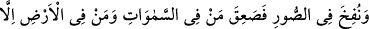

“Beni gizle ey ağaç!” diyerek ağaca iltifat etmiş olmasıdır. Tıpkı Yûsuf (a.s.)’ın kralın
sâkîsine: “Beni efendinin yanında an.” (Yusuf, 12/42) diyerek birkaç sene zindanda
kalması gibi. Şu halde Allah’ın dışındaki varlıklara bakmayı kes de İbrahim Halil
(a.s.)’ın hâline bak. Zira o, ateşe atılmak üzere iken Cebrâil (a.s.) kendisine gelerek:
“Bir ihtiyacın var mı?” diye sormuştu. O da: “Sana ihtiyacım olup olmadığını
soruyorsan, yok.” demişti. Bunun üzerine Allah da ateşi onun için serin ve selâmet
kılmış, böylece kutub ve imam olmuştu.
Bak, kaza nereden nereye yol aldı
Bu durumda başkasına güvenmek körlük olur
Abdülvâhid b. Zeyd, Ebû Âsım Basrî (r.h.)’a: “Seni Haccâc taleb ettiğinde ne
yaptın?” diye sorunca şöyle cevap verdi: “Odamdaydım. Kapıyı çalıp içeri
girdiklerinde kendimi bir fırlatılışta Mekke’deki Ebû Kubeys dağının üzerinde buldum.”
Abdülvâhid: “Peki karnını nasıl doyuruyordun?” diye sorunca: “İftar vakti gelince yaşlı
bir kadıncağız Basra’da yediğim türden iki ekmek getiriyordu.” dedi. Bunun üzerine
Abdülvâhid: “Desene Allah Teâlâ bu dünyaya Ebû Âsım’a hizmet etmesini emretmiş.”
dedi.
İşte Allah’a tevekkül eden ve Allah dışındaki varlıklardan kesilip kendini Allah’a
veren kimsenin hâli böyledir! Allah Teâlâ kendisinden başkasına umut bağlamayan
kulunu eli açık bırakmaz.
68. Sûr’a üflenince, Allah’ın diledikleri müstesnâ olmak üzere göklerde ve yerde
ne varsa hepsi ölecektir. Sonra ona bir daha üflenince, bir de ne göresin, onlar
ayağa kalkmış bakıyorlar!
“Sûr’a üflenince,” Burada kasdedilen üfleme, diriltme için olan üflemenin aşağıda
zikredilecek olmasından da anlaşılacağı üzere bütün varlıkların ölmesini sağlayacak
olan ilk üflemedir.
“__WORD__ bir şeyin içine rüzgâr üflemek demektir. “__WORD__ ağzıyla üfledi/ağzından rüzgâr
çıkardı, demektir.
“__WORD__ tâbiri, Kur’an’da beş şekilde kullanılmıştır:
1- Cebrâil (a.s)’ın Meryem (a.s.)’ın yakasına üflemesi. Nitekim Allah Teâlâ: “Biz
ona ruhumuzdan üfledik” (el-Enbiyâ, 21/91) buyurmuştur. Yâni Cebrâil onun
yakasına bizim emrimizle üfledi. İşte Cebrâil’in üflemesi ile bir kadını hâmile kılan ve